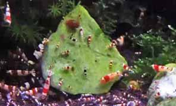

Crystal Red Shrimp
A GUIDE TO CARING & BREEDING FOR CRYSTAL RED SHRIMP CRS
Crystal Red Shrimp also known as CRS are a rare and unusual shrimp easily identified by their unique red and white striped markings. The CRS reportedly came to be from a single mutation involving the black bumble bee shrimp in Japan.
Years of inbreeding have resulted in a very fragile but beautiful strain of shrimp that has been cultured through generations. Crystal Red shrimp require near perfect water quality to thrive and reproduce.
They are not a good choice as a beginner shrimp due to their initial cost and constant demand. However knowledge is the key. This guide will equip the hobbyist with basic to tackle keeping and breeding CRS. Beginners who do not have the knowledge and attempt to keep Crystal Red shrimp end up in strife due to poor planning and implementation.
The high market prices CRS command reflect their fragile nature and the difficulty in breeding. They are harder to source from LFS than most other shrimp species. They can be sourced from other hobbyists although it is always recommended to personally pick out active and optimal colored shrimp in person.

Temperature ~74°F
- The optimum aquarium temperature for Crystal Red Shrimp is around 70-78°F (22-25°C). This range is slightly lower than that of Red Cherry shrimp. This is a strong reason why keeping both these species in one tank is a poor idea. One species will thrive and the other will be out of its comfort zone.
pH ~6.8 | Hardness 7.0
- The pH for Crystal Red shrimp should be slightly acidic from 6.2 – 7.2. This range will maximize health, color and egg hatching rates. Plant substrates such as ADA Amazonia and UpAqua are filled with natural buffers will stabilize the pH to around 6.8. These products are specifically produced to not cloud the water and work with densely planted aquarium. These products are very popular with CRS.
- The general hardness should be around ~6-8. TDS should be at about 200ppm. There are many commercial products that will help to buffer the aquarium water to these levels. When using a buffer remember to use it with incoming water during water changes. CRS prefer slightly harder water, this is a definite requirement for breeding CRS.

Nitrite 0ppm
- CRS are highly susceptible to even very low levels of nitrite in the aquarium. Nitrite should always be at 0 post cycling.

Ammonia 0ppm
- CRS are very sensitive to any ammonia levels. As with nitrite, ammonia should always be 0 post cycling.

Nitrate >20ppm
- Nitrates should be as close to 0ppm as possible. Any reading under 20ppm is suitable for keeping CRS, elevated levels can be reduced by adding aquatic plants and removing decaying matter.
Water Changes >30%
- With CRS the aquarium water should be changed at least 30% each week to reduce nitrates and replenish minerals. Dechlorinate any water added to the aquarium. Crystal Red Shrimp are sensitive to water changes and hence, more frequent lower volume changes are far safer and more effective than large infrequent water changes.

Adding the Crystal Red Shrimp
- Ensure the aquarium has been chemically tested and it is within the parameters listed above. Although Red Cherry shrimp are hardy and tolerant they are susceptible to rapid changes. To add the RCS to the aquarium first add them from the bag into a large bowl with the accompanying water.
- Using air-line tubing and a rubber band, create a siphon from the aquarium and kink the tubing by placing the rubber band over a bent section of the tube. Adjust the kink to allow a slow drip of 1 drop of water per second exiting the tube. Let this drip into the bowl for the next 20-30 minutes and monitor closely.
- After 20-30 minutes carefully use a soft mesh net to transfer the shrimp into the aquarium. Be sure to cover the net with one hand when moving the RCS from the bowl as shrimp jump and can escape the net.
- Cherry shrimp like many fish will become stressed if the water quality is not optimal. They are usually very active and early warning signs become apparent if they will not move, or they swim up to the surface and then float. Avoid this situation by conducting constant water tests, using appropriate dechlorinates and ensuring the tank has completed cycling.
- If a situation does arise check the water immediately, perform a water change and try to identify the problem. If you have more than one aquarium moving the RCS to a suitable temporary home, even if the conditions are sub-optimal is often far better than leaving them in a toxic aquarium.
- Here is a link to a full guide to setting up a shrimp tank. Including setup instructions, cycling and choosing the correct hardscape in much greater detail.

Feeding Crystal Red Shrimp
- CRS are omnivorous requiring a balanced diet. Feeding is important to give the CRS the required nutrients for breeding and birthing healthy young.
- A balanced diet of fresh vegetables and processed foods are recommended. Boiled zucchini, spinach, flakes, pellets and specialized shrimp foods are important in providing the RCRS with a balanced diet and helping them to develop solid red and white markings. Remove excess food from the aquarium after feeding. This will help with keeping ammonia and nitrites at 0.
- Crystal Red shrimp will constantly moult and leave their old shells. Do not remove the shells from the aquarium as these will provide much needed calcium in their diet when the shrimp colony consume it.
- Mosura foods and additives are top of the line supplements and diet additives that can increase the health and virility of CRS. Serious hobbyists should consider quality products an investment when looking to long term breeding and culture of CRS.

Dangers of CRS in the Planted Aquarium

- Shrimp and planted tanks are a perfect compliment for each other in some ways and a disastrous combination in others. When it comes to disasters and keeping shrimp, CO2 injection is probably the biggest killer. This is especially true for DIY CO2 setups.
- When CO2 is added to aquarium water it dissolves and is absorbed by the plants for photosynthesis. When there is no light source (at night for instance) CO2 is not utilized by the plants and instead forms carbonic acid in the water. This can plummet and swing the pH sometimes dramatically from day to night. Red Cherry shrimp, although tolerant can often not handle the swing in PH nor the lack of oxygen.
- Using CO2 injection and caring for CRS needs to be done carefully. This may not be as simple as using a solenoid valve to only inject CO2 during light hours. Horror stories have arisen where hobbyists have forgetting to reset there light timers. In the morning when the lights do not turn on but the CO2 starts bubbling there is danger for a giant PH swing and a high risk of stressing your CRS.
- Fertilizer additives need to be carefully checked before adding them to a Crystal Red shrimp aquarium. Certainly all copper and heavy metal additives should be avoided.
- Aside from this the moss and plants will provide CRS with an underwater playground to breed and flourish. Planted tanks are also great for CRS offspring. Even with small fish in the tank CRS are known to breed fast enough to increase population in a densely planted aquarium.

Tank mates & Compatibility
- Unlike Red Cherry shrimp, CRS should be kept exclusively in a species only aquarium. They reproduce much slower than other shrimp strains and the shrimp themselves are valuable and expensive. It is pointless risking both the adults and offspring at the sole purpose of housing fish in the aquarium. They enjoy the company of their own species and should be placed in an aquarium plenty of places to hide and open water to swim.
- CRS have almost no bio-load. Up to 1000 in a standard sized 55 gallon aquarium would have little strain on the biological filter bacteria. Around 2-5 shrimp per gallon is recommended
Grading Crystal Red Shrimp

- Crystal Red Shrimp come in many different grades and forms. Their price increases at an exponential rate as the quality of shrimp increases.
- The grades in order from least to most desirable are C, B, A, S, S+, SS, SSS. There are also a few different ‘types’ within the separate grades. Grades of Crystal Red shrimp are only dependent on thickness and solidity of color banding. The health, size, activeness and life span of the shrimp is identical between all grades.
- When purchasing CRS spend time looking for shrimp with solid red and white colorations. Brighter whites and deeper reds are desirable and eye-catching in the aquarium. Ensure the shrimp are active, healthy and feeding.
- It is commonly asked “If you are to breed an SSS graded CRS with another SSS graded CRS will the offspring all be SSS grade?" The answer depends on many environmental factors and unfortunately can never be a certainty. Historically breeding two of the higher grades of CRS yields higher chances of higher graded offspring.
- Grading is the result of selective breeding. It is therefore possible to increase grades when breeding lower graded shrimp. For example two 'A' grade CRS could breed together to produce a number of 'SS' grade shrimp.

Breeding Crystal Red Shrimp
- By keeping the temperature at 78° the temperature and water conditions perfect, females will soon become swollen with eggs. This is good, but it is often that the eggs will disappear suddenly and there will not be any shrimplets. The baby shrimp need very good water quality when born and also places to hide. Remove any fish as the babies are an easy snack. At this stage it is best to use an air driven filter because the tiny baby shrimp cannot be sucked up. Within about 4-5 weeks they should reach adulthood and be able to breed themselves.78°FThis is good, but it is often that the eggs will disappear suddenly and there will not be any shrimplets. The baby shrimp need very good water quality when born and also places to hide. Remove any fish as the babies are an easy snack. At this stage it is best to use an air driven filter because the tiny baby shrimp cannot be sucked up. Within about 4-5 weeks they should reach adulthood and be able to breed themselves.
- Crystal Red Shrimp come in many different grades and forms. Their price increases at an exponential rate as the quality of shrimp increases.
- The grades in order from least to most desirable are C, B, A, S, S+, SS, SSS. There are also a few different ‘types’ within the separate grades. Grades of Crystal Red shrimp are only dependent on thickness and solidity of color banding. The health, size, activeness and life span of the shrimp is identical between all grades.
- When purchasing CRS spend time looking for shrimp with solid red and white colorations. Brighter whites and deeper reds are desirable and eye-catching in the aquarium. Ensure the shrimp are active, healthy and feeding.
- It is commonly asked “If you are to breed an SSS graded CRS with another SSS graded CRS will the offspring all be SSS grade?" The answer depends on many environmental factors and unfortunately can never be a certainty. Historically breeding two of the higher grades of CRS yields higher chances of higher graded offspring.
- Grading is the result of selective breeding. It is therefore possible to increase grades when breeding lower graded shrimp. For example two 'A' grade CRS could breed together to produce a number of 'SS' grade shrimp.